Les critères de conception iOS
Ce guide a pour objectif de présenter les différents critères d’accessibilité à respecter pour obtenir une application iOS accessible.
Chacun de ces critères est présenté en expliquant pour qui il est important, quand on peut le mettre en place, pourquoi il est important et la règle d’accessibilité qui en découle.
When designing your app, keep text size, weight, and layout in mind for clarity and readability. WWDC20 (voir la vidéo)Images #
Permettre l’accès à l’information incluse dans une image pour des utilisateurs qui n’y ont pas accès.
Le point bloquant est une image sans description textuelle qui est inexploitable par des personnes ayant des déficiences visuelles.
Cible : tout le monde et en particulier les personnes déficientes visuelles.
Quand : dès la phase de conception et lors du développement.
L’alternative d’une image est renseignée via l’attribut accessibilityLabel (via le protocole UIAccessibility implémenté par tout élément standard dérivant de UIView).
-
Les images portant de l’information restituent cette information à travers leur alternative textuelle.
-
Les images décoratives n’ont pas d’alternative textuelle.
Couleurs #
Cible : tout le monde, en particulier les personnes malvoyantes, les seniors et les personnes avec des problèmes de vision (daltonisme, vision des contrastes,...).
Quand : dès la phase de conception et lors du développement.

Ne pas mettre des polices en gras va demander un contraste des couleurs plus fort que dans le cas précédent.
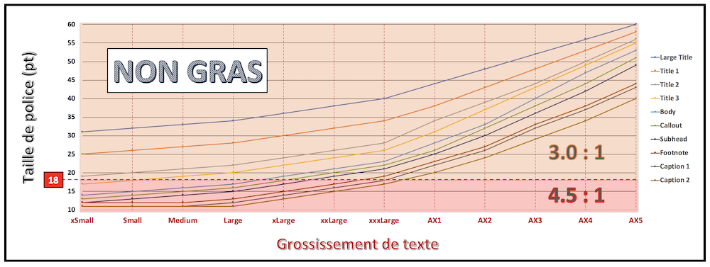
Avec l’apparition du Dynamic Type permettant de modifier de façon conséquente la taille de police, le contraste des couleurs n’est pas nécessairement figé et doit s’adapter au grossissement souhaité.
Respecter les seuils de contraste est primordial mais il ne faut pas non plus tomber dans l'extrême car un contraste trop élevé accentue la fatigue oculaire et peut engendrer une sensation visuelle de tremblement sur le texte.
Par exemple, pour les personnes sensibles à la lumière, l'utilisation d'un texte écrit en noir sur un fond blanc purs risque d'augmenter de façon très significative un effet de halo qui va agresser l'oeil et souvent contraindre à plisser les yeux pour pouvoir lire.
Cependant, pour favoriser significativement la lisibilité, il est tout de même préférable et fortement recommandé d'écrire un texte foncé sur un fond clair (texte à contraste positif).
Afin de fournir une expérience utilisateur optimale en accessibilité, il est impératif de prendre en compte deux caractéristiques colorimétriques supplémentaires :
- la luminosité (valeur > 125),
- la différence de tonalité (valeur > 500).
Ces deux éléments permettent de proposer au plus grand nombre une lecture très confortable que seul le contraste ne peut malheureusement pas assurer (voir outil mentionné en fin de section pour calcul automatique de ces valeurs).
Choisir les couleurs appropriées revient donc à vérifier toutes les contraintes définies précédemment sur :
- le contraste,
- la luminosité,
- la différence de tonalité.
Il existe cependant des cas où rajouter des motifs pour différencier les informations véhiculées uniquement par la couleur surcharge inutilement l'interface graphique si l'utilisateur n'en a pas besoin.

Dans ce cas, l'utilisation de l'option d'accessibilité va permettre ce type d'affichage uniquement à la demande de l'utilisateur.
Outils :
-
l’application Colour Contrast Analyzer (version 2.3) permet de mesurer rapidement des niveaux de contraste de couleurs (gratuit pour mac et windows),
-
l'outil Accessibility Inspector dispose aussi d'une fonctionnalité Color Contrast Calculator depuis Xcode 11 qui permet d'obtenir les mêmes résultats.
Contraste non valide : le texte « film | 20h40 … » ne présente pas un contraste suffisant : celui-ci ne sera pas lisible par tous les utilisateurs.

Passage d’information par la couleur valide et non valide :

-
La couleur ne doit jamais être le seul canal de transmission d’une information, d’indication d’une action, de sollicitation d’une réponse ou de distinction d’un élément.
-
Le contraste entre les couleurs de texte et de fond doit aussi être suffisant (à calculer avec Colour Contrast Analyzer ou avec la fonctionnalité Color Contrast Calculator de l'outil Accessibility Inspector depuis Xcode 11).
-
Avec l'arrivée du Mode Sombre en iOS 13, une attention toute particulière doit être portée sur les contrastes utilisés au sein des différents thèmes et pouvant être modifiés avec l'option d'accessibilité .
-
Le résumé détaillé de la vidéo WWDC 2020 intitulée Make Your App Visually Accessible est un excellent point d'entrée pour se faire une idée précise des directions à suivre (en particulier la partie 'COULEUR & FORMES' - 'Contraste des couleurs').
Alternative textuelle #
Cible : tout le monde et en particulier les personnes déficientes visuelles.
Quand : dès la conception, à la rédaction du contenu et pendant le développement.
Tout comme pour les images, il est important de renseigner une alternative textuelle lorsque l’information n’est pas disponible pour les personnes utilisant un lecteur d'écran.
C’est le cas des composants fournissant de l’information par la couleur, la forme, la position, le son…
Sur mobile, tous les composants peuvent recevoir une alternative textuelle, il est donc possible d’enrichir la vocalisation native d’un élément, y compris celle d’un simple texte.
La place sur mobile étant réduite, on utilise bien souvent des abréviations pour les textes.
Cependant, cela pose un problème aux utilisateurs de synthèse vocale qui restitue les abréviations telles quelles.
Pour corriger ces vocalisations, il suffit de placer une alternative textuelle sur le texte.
Certaines images sont régulièrement associées à du texte pour donner une information.
C’est le cas notamment des « messages non lus » où une infobulle donne le nombre de messages à lire et où une image donne l’information « message ».
Dans ce cas, la solution consiste à placer une alternative textuelle sur le texte qui donne toutes les informations nécessaires.
L’alternative textuelle d’un élément est renseignée via les attributs accessibilityLabel, accessibilityHint, accessibilityValue et accessibilityTrait (via le protocole UIAccessibility implémenté par tout élément standard dérivant de UIView).
L’ordre de vocalisation qui est toujours le même (label, value, trait et hint) ne peut pas être changé et la vocalisation est réalisée en une seule fois, à l’arrivée sur l’élément.
Pour plus d’informations techniques sur ces attributs, il est conseillé de consulter la section alternatives textuelles dans le guide pour les développeurs.
L’icône « mail » couplée à l’infobulle de valeur « 3 » fait comprendre qu'il y a « 3 mails non lus ».
Si aucune alternative textuelle n’est ajoutée, 2 vocalisations seront lues « bouton sans libellé » et « 3 » d'où l’importance d’ajouter des alternatives textuelles.
-
Les éléments de l’application qui nécessitent une alternative en possède bien une.
-
Les alternatives textuelles de l’application sont explicites et compréhensibles.
Titre et en-tête #
Cible : tout le monde
Quand : dès la conception et à la rédaction du contenu.
Le titre de la page est le premier élément qui est vocalisé ou vu sur un écran mobile.
Il facilite la navigation pour tout le monde et permet de savoir où on se trouve dans l’application à tout moment.
Une erreur commune est de mettre un titre unique pour toutes les pages d’une application (ou même pas de titre du tout !).
Les en-têtes iOS permettent de structurer les pages en apportant une information supplémentaire très utile à l’API d’accessibilité car VoiceOver est capable de naviguer d’en-tête en en-tête permettant ainsi de se déplacer plus rapidement dans la page.
Pour définir un élément en tant qu’en-tête, il faut positionner son attribut accessibilityTraits à la valeur accessibilityTraitHeader.
Exemple non valide :

-
Chaque écran doit avoir un titre qui lui est propre ou qui permet de se repérer dans la navigation.
-
Les éléments identifiés visuellement comme des en-têtes doivent être déclarés à l’API d’accessibilité comme tels.
État des éléments #
Permettre aux utilisateurs de lecteurs d’écran d’avoir accès aux informations des composants, à leur état et leur nature afin qu’ils puissent les utiliser sans difficultés.
Cible : tout le monde et en particulier les personnes déficientes visuelles.
Quand : lors du développement.
Si un élément ne restitue pas à la vocalisation son statut, sa nature ou son état, l’utilisateur de VoiceOver est dans l’impossibilité de comprendre ce qui se passe à l’écran.
Ne pas préciser qu’une zone est dépliée ou que l’on se trouve face à un système d’onglets sont des exemples très fréquents.
Il est fréquent de proposer des onglets personnalisés afin d’avoir un rendu différent.
Il est donc à la charge du développeur de donner les informations de nature et d’états des onglets à l’utilisateur via les attributs d’accessibilité appropriés.
Autres éléments classiques qui ne restituent pas par défaut leur état : les zones dépliables.
Encore une fois, c’est grâce à l’alternative textuelle du titre de la zone dépliable que l’on peut donner à l’utilisateur de VoiceOver le statut de celle-ci.
Pour renseigner ce genre d’information, il faut utiliser les attributs accessibilityLabel et accessibilityTrait.
Tout élément dont le statut est modifié durant l’utilisation de l’application doit restituer son état à travers son alternative textuelle.

Composant standard #
Utilisateur ⟹ permet à tous les utilisateurs d’interagir plus intuitivement avec l’interface.
Technique ⟹ améliore globalement la maintenabilité et réduit les temps de développement.
Cible : tout le monde.
Quand : en phase de sélection des briques logicielles et lors des développements.
La plupart du temps, l’accessibilité est prise en compte dans les composants natifs dont l’utilisation permet à l’utilisateur de se retrouver dans une situation et un comportement habituels.
La navigation dans une interface standard est donc plus confortable.
Il est donc préférable d'utiliser au maximum les composants natifs en modifiant leur apparence.
Si aucun composant standard ne permet de répondre au besoin, créer un composant dédié basé sur un composant standard en veillant à conserver la cohérence de navigation et l’accessibilité.
Zone de clic #
Améliorer le confort de navigation au toucher.
Cible : tout le monde et en particulier les personnes avec des déficiences motrices.
Quand : dès la phase de conception et lors du développement.
Une taille insuffisante pour la zone d’action d’un composant peut empêcher certains utilisateurs de profiter pleinement de l’application.
Cela peut engendrer des frustrations qui peuvent conduire à la désinstallation de l’application.
Chaque élément cliquable de l’application doit donner à l’utilisateur une taille suffisante pour sa zone d’action.
Dans les exemples ci-dessous, le cadre noir correspond à la taille de la zone interactive.
Exemple valide :

Exemple non-valide :

Apple définit pour son système une taille de zone de clic minimum de 44pt (hauteur ET largeur).
Elément fantôme #
Permettre la navigation dans l’application sans avoir d’éléments perturbants, non utilisables sur la vue courante.
Cible : les personnes déficientes visuelles.
Quand : lors du développement.
Bien qu’invisibles à l’écran, certains éléments peuvent être lus par le lecteur d’écran (éléments positionnés en dehors de la zone visible ou masqués par d’autres éléments).
La superposition d’écrans est quelque chose de courant sur mobile, mais cela engendre des problèmes d’accessibilité très lourds à corriger si elle n’est pas faite correctement dès le départ.
VoiceOver est capable de lire les informations d’une vue qui est placée « sous » une autre mais si l’utilisateur n’est plus capable d’interagir avec cette vue, cela perturbe totalement sa navigation et celle-ci devient vite impossible.
Un exemple fréquent d’élément fantôme survient lors de la création de composant personnalisé tels que des « alert dialog » par exemple.
Dans l’exemple ci-dessous, l’alerte personnalisée présente ce problème de vue fantôme.
En effet, avec VoiceOver activé, il est possible de « lire » les éléments situés en dessous, comme nous le montre le focus de VoiceOver (en noir sur l’image).

Contrôle de contenu #
Utilisateur ⟹ permettre aux utilisateurs de rester maître de l’application et d’éviter une pollution sonore qui peut nuire à la navigation.
Technique ⟹ améliorer le référencement naturel.
Cible : tout le monde et en particulier les personnes déficientes visuelles et cognitives.
Quand : lors de la conception et lors du développement.
Sur mobile, les lecteurs d’écran essaient de transmettre au maximum à l’utilisateur les changements de contexte.
Dans certains cas, cela peut donner des vocalisations permanentes ou empêcher toute action de l’utilisateur qui doit rester maître du contenu à tout instant (particulièrement vrai avec du contenu interactif).
Il faut donc éviter par exemple qu’une vidéo ne se lance directement en plein écran, qu’une vidéo ne se lance directement sans une action au préalable de l’utilisateur, qu’un carrousel défile de manière automatique...
Changement de contenu #
Donner accès aux modifications des informations de l’application aux utilisateurs de lecteur d’écran.
Cible : tout le monde et en particulier les personnes déficientes visuelles.
Quand : lors du développement.
Lorsque du contenu est modifié dynamiquement à la suite d’une action de l’utilisateur, il faut le notifier à la synthèse vocale : sans retour vocal, l’utilisateur ne sait pas qu’une action a été déclenchée.
Sur une page, si du contenu est modifié dynamiquement suite à une action utilisateur, il est important que le lecteur d’écran soit notifié afin qu’il déclenche une vocalisation : par exemple, les listes qui se rafraîchissent ou un compteur de temps.
Pour déclencher une vocalisation, il faut envoyer une notification via la méthode UIAccessibilityPostNotification avec en paramètre la notification permettant de déclencher une vocalisation UIAccessibilityAnnouncementNotification et la chaîne de caractère à vocaliser.
Il est également conseillé de notifier l’API d’accessibilité lorsqu’un changement de contexte survient en envoyant une notification via la méthode UIAccessibilityPostNotification.
Il existe plusieurs notifications de modification, mais les deux plus utiles sont :
UIAccessibilityLayoutChangedNotification: permet de spécifier qu’une partie de la page a été modifiée,UIAccessibilityScreenChangedNotification: permet d’annoncer un changement global de la page.
Pour plus d’information technique sur ces méthodes, nous vous invitons à regarder la section correspondante dans le guide développeur pour iOS.
Scroll horizontal #
Donner une indication visuelle aux utilisateurs lors de la présence de scrolls horizontaux et leur permettre de les utiliser naturellement.
Cible : tout le monde et en particulier les personnes déficientes visuelles.
Quand : dès la phase de conception et lors du développement.
Un scroll horizontal peut être très difficile à détecter si aucun visuel n’aide l’utilisateur à comprendre qu’il existe plusieurs pages.
Ne pas hésiter à afficher un élément pour indiquer un scroll horizontal (les "points" d’un UIPageControl).
Quand cela est nécessaire, ajouter également des boutons « suivant » et « précédent ».
Exemple valide :
Exemple non-valide :
-
les scrolls horizontaux sont indiqués visuellement,
-
avec le lecteur d’écran activé, un mécanisme permet de passer de page en page lorsqu’un scroll horizontal est présent.
Formulaire #
Perfectionner la navigation en améliorant la compréhension globale de la page, les champs de formulaires décrivant le contenu attendu.
Cible : tout le monde et en particulier les personnes déficientes visuelles.
Quand : lors de la conception et lors du développement.
Lier les champs de formulaires avec leurs labels apporte une vocalisation supplémentaire qui permet à l’utilisateur de comprendre quoi remplir lorsqu’il arrive sur un champ de formulaire.
Sous iOS, on apporte une information supplémentaire sur les champs de formulaire via l’attribut accessibilityLabel.
Ordre de lecture #
Assurer un ordre de lecture logique et cohérent aux utilisateurs de lecteur d’écran pour leur assurer une complète compréhension du contenu.
Cible : les personnes déficientes visuelles.
Quand : lors du développement.
L’ordre de lecture permet à l’utilisateur de lecteur d’écran de se repérer dans la navigation et d’assurer une cohérence fonctionnelle.
Par défaut, l’ordre de lecture de la synthèse vocale prend en compte plusieurs paramètres : la lecture « logique », soit de gauche à droite et de haut en bas (en France).
Il existe cependant certains cas où le lecteur d’écran n’arrive pas à déterminer un ordre et, dans ce cas, il utilise l’ordre de définition des éléments, ce qui peut amener des vocalisations incohérentes.
Redéfinir l’ordre de lecture dans VoiceOver s’effectue en respectant le protocole UIAccessibilityContainer.
L’idée est d’avoir un tableau des éléments de la vue qui définit l’ordre de lecture des éléments.
Il est bien souvent nécessaire d’utiliser l’attribut shouldGroupAccessibilityElement afin d’avoir un ordre précis, mais pour une partie seulement de la vue (le reste étant l’ordre naturel de lecture).
L’ordre de lecture par défaut dépend complètement de l’implémentation et de l’ordre de déclaration des éléments.
Dans ce cas-ci : 1, 4, 7, 2, 5, 8, 0, 3, 6, 9, vol+, vol-, p+, p-.
Un ordre de lecture plus cohérent serait 1, 2, 3, 4, 5, 6, 7, 8, 9, 0, vol+, vol-, p+, p-.
Pour plus d’information sur l'implémentation technique, nous vous invitons à regarder la section correspondante dans le guide développeur pour iOS.
Langue #
Assurer une compréhension des textes de l’application.
Cible : les personnes déficientes visuelles.
Quand : lors du développement.
La vocalisation donnée par VoiceOver s’effectue, par défaut, dans la langue du système du mobile.
Il arrive parfois que certains mots et textes d’une application soient dans une langue différente.
Afin que la vocalisation soit audible, il faut déclarer ces textes dans la langue correspondante.
Pour modifier la langue de prononciation de VoiceOver pour un mot ou un texte, il existe l’attribut accessibilityLanguage disponible via le protocole UIAccessibility.
Les mots et textes dans une langue différente de celle du reste de l’application sont bien vocalisés dans leur langue.
Orientation de l’écran #
Assurer une meilleure lisibilité du contenu tout en permettant aux personnes déficientes motrices qui utilisent leur terminal en mode paysage de pouvoir utiliser l’application sans contraintes.
Cible : tout le monde et en particulier les personnes avec des déficiences visuelles et/ou motrices.
Quand : lors de la conception et lors du développement.
L’accès au contenu d’une application ne doit absolument pas dépendre de l’orientation de l’écran, c’est pourquoi il est très fortement recommandé de mettre en place un passage sans contraintes entre les modes portrait et paysage dès le début du projet.
Bien évidemment, ceci n’est valable que si des contraintes fonctionnelles ne viennent pas à l’encontre d’un de ces deux modes (projection, tableau… par exemple).
L’idéal est de pouvoir aussi déployer l’application sur des écrans de type iPad de façon à favoriser la lecture et la gestuelle pour l’utilisateur.
-
Le cahier des charges
designparfaitement détaillé et comprenant l’ensemble des écrans à implémenter selon leur orientation. -
La définition très précise de la façon dont les transitions entre les modes doivent être réalisées.
-
La parfaite adaptation du contenu aux modes portrait et paysage par le biais d’une batterie de tests graphiques sur tous les mobiles compatibles avec la version iOS déployée (très important pour le grossissement de texte).
Écran spécifique accessibilité #
En fonction des spécificités liées aux interfaces graphiques proposées, il peut être beaucoup plus facile de vouloir créer un nouvel écran dédié accessibilité pour ne pas avoir à remettre en cause les développements déjà implémentés.
Même si cela peut sembler être une bonne idée à première vue, il n'est absolument pas recommandé de s'engager dans cette voie car :
-
le lecteur d'écran est utilisé pour les personnes aveugles mais aussi par les personnes illétrées. Pour ces dernières, s'apercevoir qu'un écran d'application change en fonction de l'activation de cette fonctionnalité peut laisser croire que toutes les informations fournies initialement ne sont peut-être pas les mêmes que celles proposées en accessibilité, ce qui peut conduire à un sentiment discriminant,
-
d'un point de vue pratique pour la maintenabilité de l'application, le fait de rajouter un écran qui ne sera utilisé que lorsqu'une option d'accessibilité est activée risque de rapidement l'oublier si des modifications ultérieures sont à apporter sur l'écran initial.
Options d'accessibilité #
Les options d'accessibilité présentes dans les réglages du terminal sont toutes susceptibles d'améliorer de façon conséquente le parcours d'un utilisateur souffrant d'un trouble que l'option peut fortement aider à surmonter.
Il est donc primordial de :
-
comprendre comment chacune de ces options peut impacter la conception et la réalisation d'une application,
-
tester chacune des options appropriées afin de s'assurer que son effet est bien pris en compte au sein de l'application proposée.
[...] it's also our duty to listen and respect the setting for users that have it enabled. WWDC 2020 - Make Your App Visually Accessible (voir la vidéo)
Cible : tout le monde.
Quand : lors de la conception et lors du développement.
La liste exhaustive de ces options est fournie ci-dessous en détaillant leur action et leur correspondance programmatique une fois sélectionnées.
- Augmenter le contraste (UIAccessibilityDarkerSystemColorsEnabled) : voir WWDC 2018 pour un descriptif de la fonctionnalité.
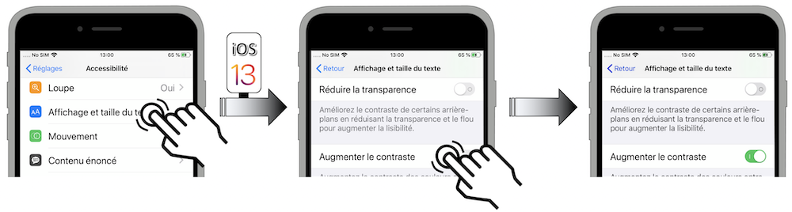
Depuis iOS 13, cette option d'accessibilité est désormais une variable d'instance traitCollection.
- Activer l'AssistiveTouch (UIAccessibilityIsAssistiveTouchRunning) : affiche le menu homonyme au premier plan quelle que soit l'application lancée.
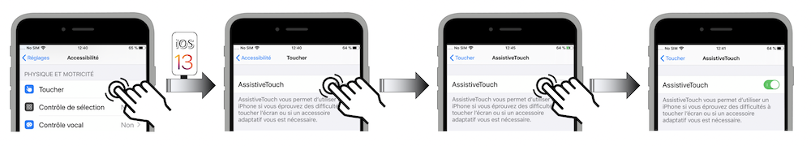
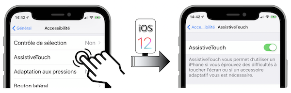
- Mettre le texte en gras (UIAccessibilityIsBoldTextEnabled) : voir WWDC 2018 pour un descriptif de la fonctionnalité.
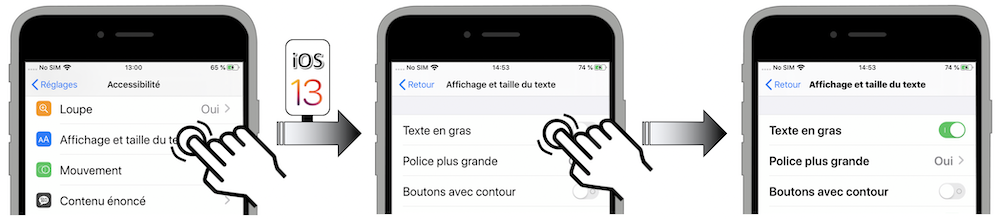
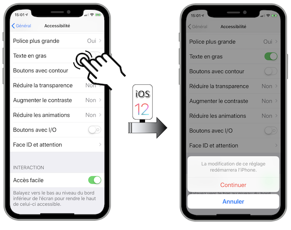
- Afficher les sous-titres (UIAccessibilityIsClosedCaptioningEnabled) : permet l'affichage de sous-titres codés (SC) ou pour sourds/malentendants selon leur disponibilité au visionnage dans l'
appTVou dansVidéos.

- Modifier les couleurs en échelle de gris (UIAccessibilityIsGrayscaleEnabled) : permet aux personnes ne distinguant pas les couleurs de pouvoir cerner sans problèmes les écrans particulièrement bigarrés.
- Activer l'Accès Guidé (UIAccessibilityIsGuidedAccessEnabled) : limite l'utilisation du terminal à une seule et unique application.
- Inverser les couleurs (UIAccessibilityIsInvertColorsEnabled) : limite l'éblouissement tout en atténuant fortement les contraintes et la fatigue oculaires en passant le terminal en mode assombri ⟹ cette option peut ne pas être activée sur cetrains éléments grâce à la propriété
accessibilityIgnoresInvertColors.
- Passer l'audio en mono (UIAccessibilityIsMonoAudioEnabled) : aide les personnes malentendantes ou sourdes d'une oreille par exemple.
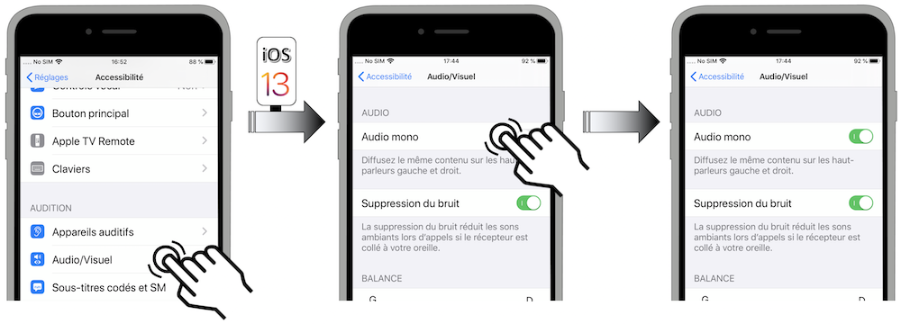
- Limiter les animations visuelles (UIAccessibilityIsReduceMotionEnabled) : voir WWDC 2018, WWDC 2019 et WWDC 2020 pour un descriptif détaillé de la fonctionnalité.
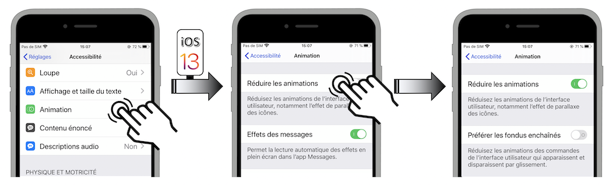

- Préférer les fondus enchaînés (UIAccessibilityPrefersCrossFadeTranstions) : voir WWDC 2019 et WWDC 2020 pour un descriptif précis de la fonctionnalité.
- Réduire le floutage et la transparence (UIAccessibilityIsReduceTransparencyEnabled) : voir WWDC 2018 pour un descriptif de la fonctionnalité.

- Secouer pour annuler (UIAccessibilityIsShakeToUndoEnabled) : affichage d'un menu par secousse du terminal qui permet de rétablir une action supprimée ou encore d'éviter de rester appuyé sur la touche d'effacement pour regarder les lettres s'effacer l'une après l'autre.
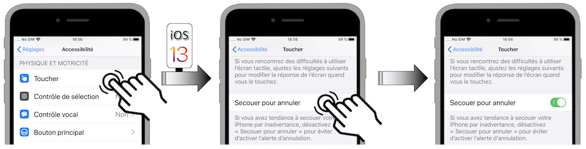
- Énoncer le contenu de l'écran (UIAccessibilityIsSpeakScreenEnabled) : permet l'accès au player natif pour lire automatiquement une page web par exemple.
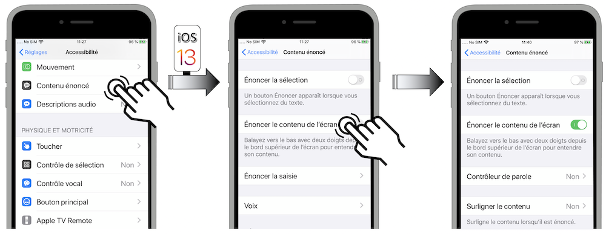
- Énoncer la sélection (UIAccessibilityIsSpeakSelectionEnabled) : donne accès à l'affichage d'un menu qui propose d'énoncer la sélection qui a déclenché son apparition.
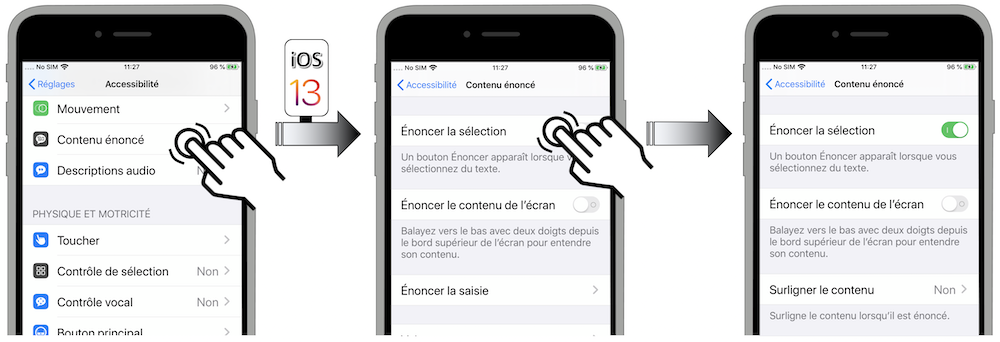
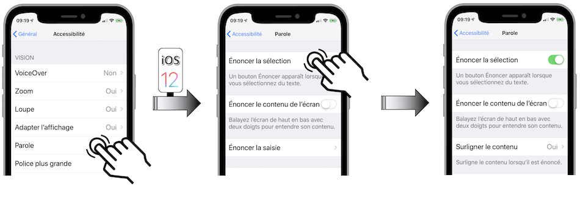
- Activer le Contrôle de Sélection (UIAccessibilityIsSwitchControlRunning) : active la fonctionnalité en
modepointou enmodeélément.

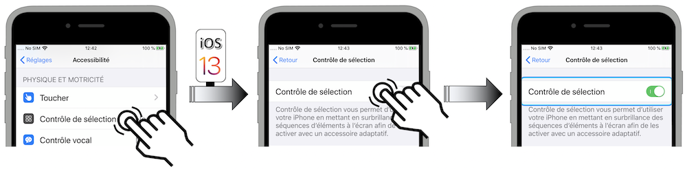
- Activer VoiceOver (UIAccessibilityIsVoiceOverRunning) : active le lecteur d'écran.
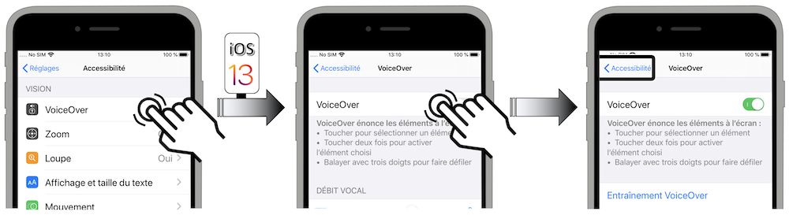
- Prévisualisation vidéo (UIAccessibilityIsVideoAutoplayEnabled) : voir WWDC 2019 pour un descriptif de cette nouvelle fonctionnalité iOS 13.
- Différencier sans couleur (UIAccessibilityShouldDifferentiateWithoutColour) : voir WWDC 2019 pour un descriptif de cette nouvelle fonctionnalité iOS 13 et de son accès programmatique possible à partir de iOS 14.
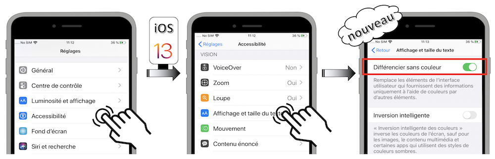
- Boutons avec I/O (UIAccessibilityIsOnOffSwitchLabelsEnabled) : une fois activée, cette option dont l'accès programmatique est une nouveauté iOS 13 affiche directement l'état des boutons à bascule pour éviter que seule la couleur soit porteuse de l'information.
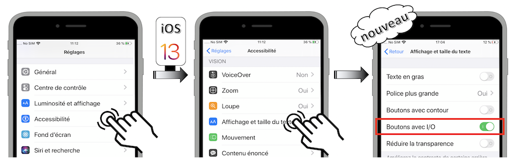
Une fois l'option activée, si l'action désirée n'est pas effective au sein de l'application, il est très fortement recommandé d'agir en conséquence en se tenant informé de l'état de l'option impactée pour fournir à l'utilisateur l'expérience à laquelle il s'attend.
La liste complète des options d'accessibilité avec leur notification dédiée est présente dans la partie développeur.
Il peut être aussi particulièrement intéressant de suivre les (dés)activations de ces options sous forme d'indicateurs afin de mieux connaître les utilisateurs d'une application et d'affiner subséquemment sa mise en oeuvre.